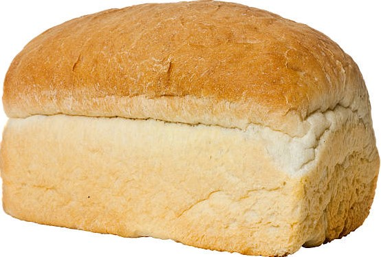

How To
Recipes and More
Breads
White Bread

Ingredients
- 11 c. flour
- 2 T. yeast
- 6 T. sugar
- 6 T. oil
- 4T salt
- 1 c. milk
- 3 c. water
- Equipment: kettle, larg mixing bowl, large mixing spoon (wooden), 4 cup glass measuring cup, plastic wrap, dish
Steps to make Bread
- Put water in a kettle and turn on to heat up.
- Put 4 cups of flour and all other dry ingredients into a very larg bowl and stir to combine.
- Pour oil and milk into large glass measuring cup. If you don't have a large measuring cup, combine ingredients in a pot.
- Start adding the 3 cups of hot water.When you only have about a half a cup left, feel the water and keep stirring and feeling the mixed liquids as you add the water. If it's too hot, add a little cold water. If it's too cold, add more of the hot water It should be hot enough that you feel a reaction to sticking in your finger, but not hot enough that you want to pull your finger out.
- Mix the liquids into the flour with a large spoon. Some people use a wooden spoon.
- Pour
- Stop
- Knead
- Stop
- Pour
- Cover
- If
- After
- Let